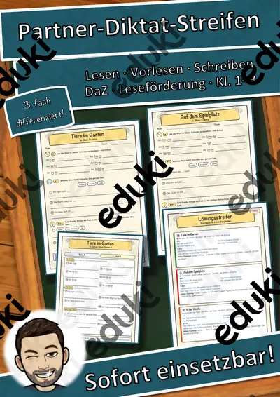
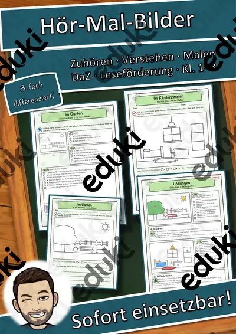
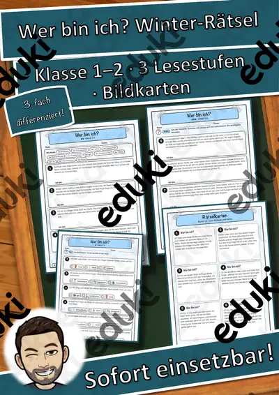
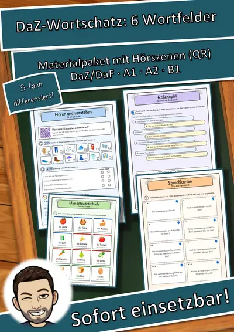

DaZ & Leseförderung Materialpaket: Partner-Werkstatt – Partnerdiktat, Hör-Mal-Bilder, Lese-Fitness-Pass (3 Niveaus, QR-Audio)
Lesen & Schreiben zu zweit – drei Partner-Werkstätten für DaZ und Leseförderung, sofort einsetzbar und dreifach differenziert
Lesetandems, Willkommensklassen und Förderstunden brauchen Material, bei dem beide Kinder gleichzeitig üben: eines liest vor, das andere schreibt, malt oder zählt – dann wird getauscht. Jede Aufgabe ist mit ★, ★★ oder ★★★ markiert, so arbeiten Kinder mit unterschiedlichem Stand am selben Blatt. 15 QR-Codes mit den Stimmen von Lina und Emir machen jede Werkstatt auch allein nutzbar.
Preisvorteil: Einzeln kosten die 3 Teile zusammen 8,97 €. Im Paket zahlst du nur 5,99 € (rund 33 % gespart).
Die 3 Teile
Partner-Diktat-Streifen (18 Seiten): 6 Wortfelder mit ★ lautgetreuen Wörtern mit Silbenbögen, ★★ kurzen Sätzen, ★★★ Doppelsätzen mit wörtlicher Rede; 6 Hör-Diktate per QR, Allein-Trainings, Heftstreifen, Checkliste, Fehler-Detektiv, Lösungsstreifen
Hör-Mal-Bilder (18 Seiten): 6 eigene Szenen zum Ausmalen + 6 Vorlese-Karten mit 90 Aufträgen (Farben · Lagewörter · Anzahl und Vergleich); 6 QR-Audios, Beschreibungsseite, Lösungsbilder und Checklisten
Lese-Fitness-Pass (15 Seiten): 12 Lesekarten (80 Silben, 64 Wörter, 24 Sätze) mit 3-Runden-Tabellen, Trainer-Protokoll, 3 QR-Lesevorbilder, Lesepass mit Urkunde, Würfel-Lesen, Silben-Puzzle, Lese-Tipps, Lösungen
Insgesamt 51 Seiten + 3 Deckblätter und 15 Audios. Geeignet für Klasse 1–3 (Schwerpunkt Klasse 2 und 3), Vorbereitungs- und Willkommensklassen, DaZ-Förderung, Lesetandems, Freiarbeit, Wochenplan und Förderschule.
Bilder: eigene Zeichnungen und Noto Color Emoji (SIL Open Font License). Audios per Sprachsynthese. Texte mit KI-Unterstützung erstellt, sprachlich geprüft und überarbeitet.
Viel Freude beim gemeinsamen Lesen und Schreiben wünscht dir Snice!
Ähnliche Materialien
DaZ & Leseförderung: Lese-Fitness-Pass – Silben, Wörter, Sätze flüssig lesen (Lesetandem, QR-Audio)

DaZ & Leseförderung: Partner-Diktat-Streifen – 6 Wortfelder, 3 Niveaus, Hör-Diktat per QR-Code

DaZ & Leseförderung: Hör-Mal-Bilder – Zuhören, Lagewörter verstehen, malen (3 Niveaus, QR-Audio)

Winter-Rätselwerkstatt Materialpaket: Wer bin ich? + Krimi-Rätselheft + Logicals – 3 Rätselhefte in 3 Stufen (Klasse 1–4)

Lesespaziergang Materialpaket: 3 Geschichten, 6-fach differenziert – Herbst, Advent, Winter (Klasse 1–4, DaZ)

DaZ-Wortschatz Materialpaket: 6 Wortfelder differenziert A1/A2/B1 – Hörszenen (QR), Lückentexte, Rollenspiele, Sprechkarten

Lesewinter Materialpaket Klasse 2, 3 und 4: 30 Wintertexte in je 3 Stufen – tägliche Lesezeit, Lesefluss-Training, Hörfassung (einmal zahlen)